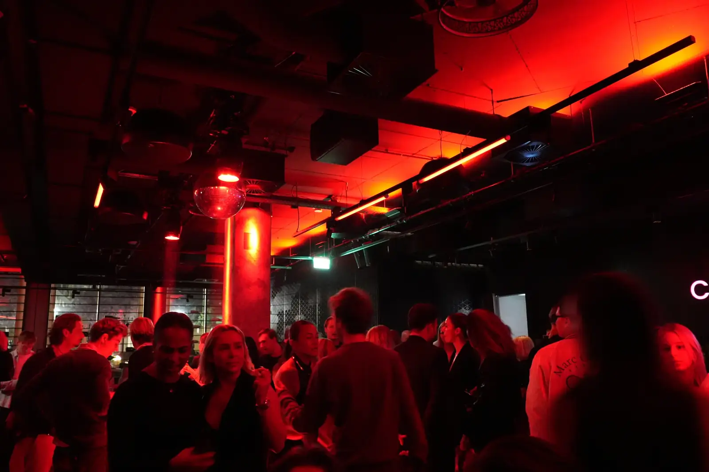
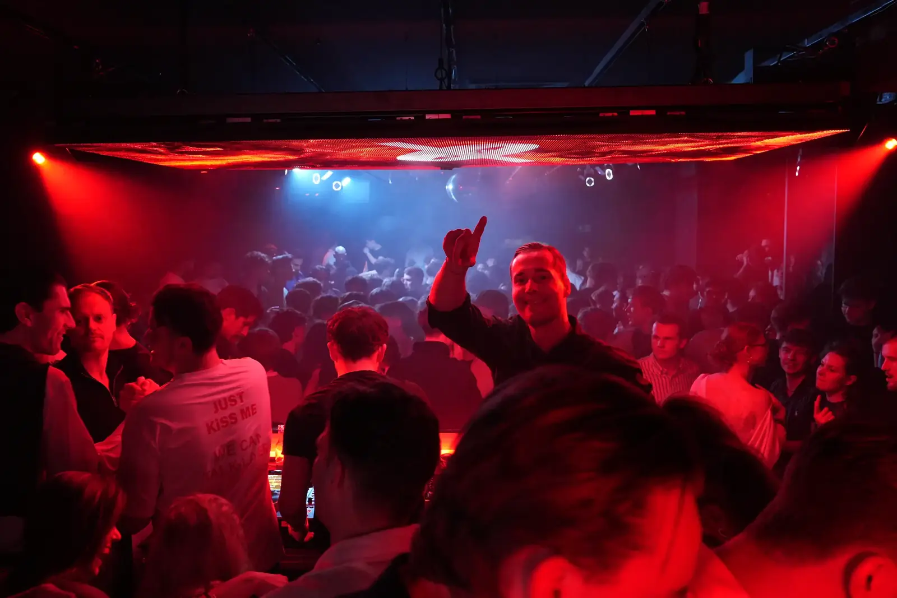
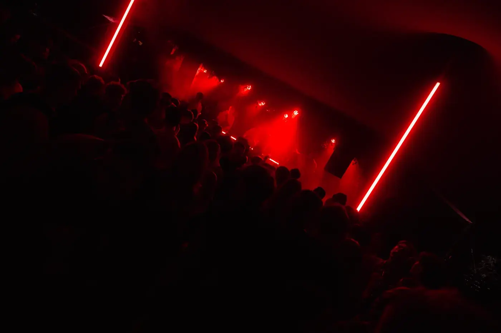
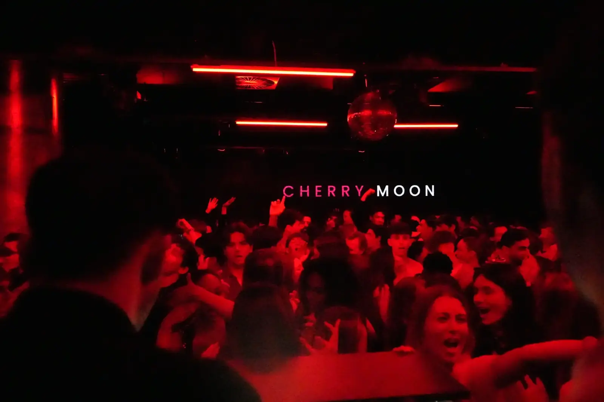
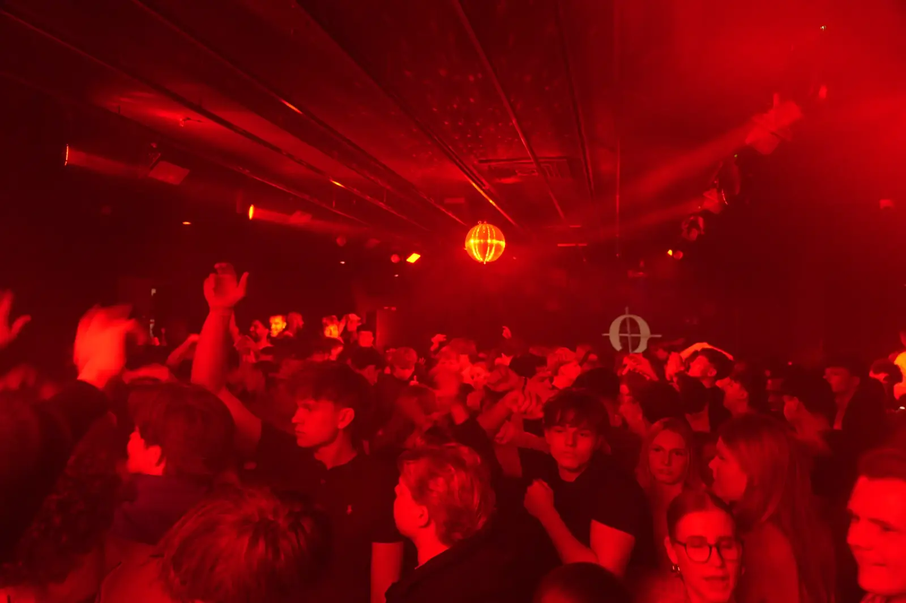

Rückblick
Alle Nächte
30 Nächte in der Saison 2026: 21 in der Stadt, 9 am Strand. Und dazu die Bilder, die bleiben.
Bilder der Nacht










Auf unseren Events entstehen Fotos und Videos. Wenn du nicht abgebildet werden möchtest, sag es dem Personal vor Ort oder schreib uns.
Saison 2026
- Rooftop Event, Indoor und beheizte GlasterrasseStrand
Bayside Hotel, Scharbeutz - Bayside Rooftop PartyStrand
Bayside Hotel, Scharbeutz - Rooftop EventStrand
Bayside Hotel, Scharbeutz - GAGA Club OpeningStadt
GAGA, Reeperbahn - Clubnight OpeningStadt
Coda im Radisson Blu - Sands Open Air, DaydrinkingStadt
Sands Bar, Dammtor - Nautic Club OpeningStrand
Nautic Club, Timmendorfer Strand - Easter SpecialStadt
Alsterinsel, Dammtor - Circle Club OpeningStadt
Circle Club, Winterhude - GAGA ClubnightStadt
GAGA, Reeperbahn - Tanz in den MaiStadt
Alsterinsel, Dammtor - GAGA Indoor und TerraceStadt
GAGA, Reeperbahn - Cherry Moon x CircleStadt
Circle Club, Winterhude - Radisson Blu Open AirStadt
Radisson Blu, Hamburg - Rooftop Open AirStadt
GAGA Dachterrasse, Reeperbahn - Open Air mit WM Public ViewingStadt
Radisson Blu, Hamburg - Seaside Open AirStrand
Seaside, Grömitz - Hamptons Beach Open AirStrand
Hamptons, Scharbeutz - Beach Open AirStrand
Strand Scharbeutz - Hermannshöhe Open AirStrand
Hermannshöhe, Ostsee - GAGA Terrace Open AirStadt
GAGA, Reeperbahn - Sands Open AirStadt
Sands Bar, Dammtor - Boat PartyStadt
MS Koi, Hamburg - Beach Club Open AirStrand
Ostseelounge, Grömitz - Summer Closing Open AirStadt
Radisson Blu, Hamburg - Straßenfest Pre PartyStadt
Circle Club, Winterhude - Summer ClosingStadt
Sands Bar, Dammtor - Season OpeningStadt
GAGA, Reeperbahn - HalloweenStadt
Circle Club, Winterhude - HalloweenStadt
Alsterinsel, Dammtor
Nichts verpassen
Neue Nächte und Vorverkaufsstart per Mail, bevor es auf Instagram steht. Kein Spam, jederzeit abbestellbar.
Doppelte Bestätigung per Mail. Abmelden geht mit einem Klick in jeder Ausgabe.